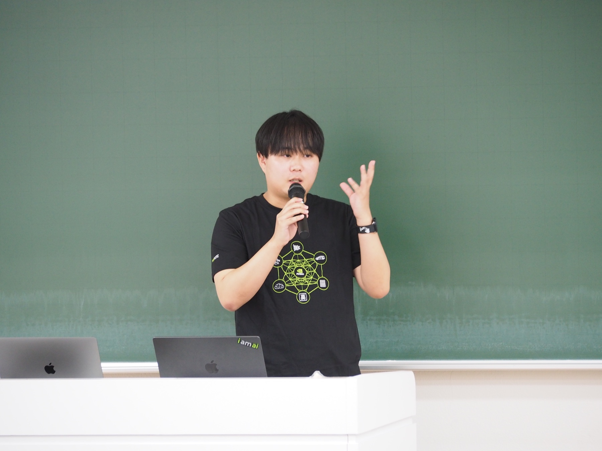

Fig. 2フローターの例 シアンの点は 少数枚の画像から再構成した際に空中に生じやすいノイズ（floater）のイメージ 研究テーマはこのノイズの低減
ドラッグで回転FrugalNeRF 改良研究
- 少数枚の入力画像から3Dシーンを再構成するFrugalNeRFを基盤に 空中に浮かぶノイズ（floater）の低減手法を研究
- 国際学会への投稿に向け論文化を推進
東京工科大学大学院 修士1年 ／ 2028年3月 修了予定
佐々木 舞人
コンピュータビジョン領域 特に自由視点画像生成と3次元再構成の研究に従事
研究と企業向けAIX支援の実務の両面から 先端技術の社会実装を志向
0%
Fig. 1instant-ngpで再構成しメッシュ化したキツネ（instant-ngp公式サンプルデータ）
ドラッグで回転メッシュの頂点から65,000点を抽出して表示
東京工科大学大学院 バイオ・情報メディア研究科 コンピュータサイエンス専攻 修士1年
マルチメディアデータモデリング研究室所属
株式会社 neoAI のAIエンジニアとして企業向けAIX支援に従事
研究テーマはコンピュータビジョン 特に自由視点画像生成と3次元再構成
2026年4月より NVIDIA学生アンバサダー として活動
NVIDIA研究員の技術指導のもと先端技術を習得し 学生向けワークショップにて発表
未知の技術や役割にも積極的に挑み 研究とプロダクト開発の両面から価値を創出するエンジニアを志向
2026.04 – 現在
NVIDIA 学生アンバサダープログラム（AIコース）
2024.06 – 現在
株式会社 neoAI（東京大学松尾研究室発スタートアップ）
2026.04 – 現在
東京工科大学大学院 バイオ・情報メディア研究科 コンピュータサイエンス専攻 マルチメディアデータモデリング研究室
2022.04 – 2026.03
東京工科大学 コンピュータサイエンス学部 コンピュータサイエンス学科 人工知能専攻

2026年8月29日 東京工科大学 八王子キャンパスにて開催のNVIDIA学生アンバサダーワークショップ AIセッションで発表
演題は instant-ngpを用いたメッシュ化
NeRFの高速実装であるinstant-ngpを用い 画像から3Dメッシュを生成する手法を紹介
instant-ngpやNeRFなど 画像から3次元形状を得る技術を実際の手順とともに紹介
専門技術に初めて触れる参加者にも理解できるよう構成を整理して説明
全国の大学から選抜された学生アンバサダーが企画・運営するワークショップの場づくりに参加
ページ冒頭の Fig. 1 は instant-ngp で生成したメッシュの例
ワークショップ開催報告を読む（東京工科大学 公式サイト） ↗Fig. 2フローターの例 シアンの点は 少数枚の画像から再構成した際に空中に生じやすいノイズ（floater）のイメージ 研究テーマはこのノイズの低減
ドラッグで回転